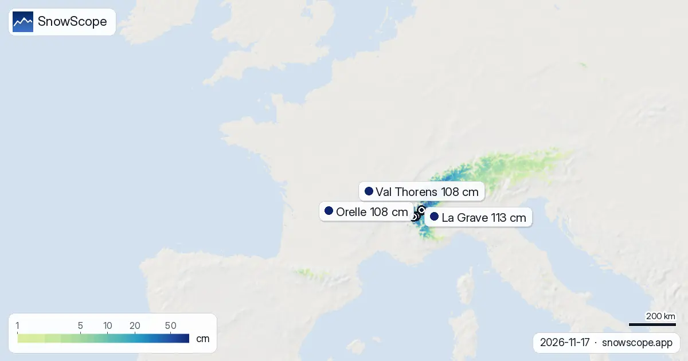

Gibt es Schnee in Frankreich? Schneehöhe und Neuschnee am 17. November 2026
Die weiße Fläche in Frankreich liegt heute bei etwa 8.720 km², 730 km² weniger als gestern. Etwa 10 % der kartierten Berge und Hügel des Landes sind bedeckt.
Die Live-Schneeprognose für La Grave in der SnowScope-AppSchneehöhen, Pulverschnee-Alarme und 3D-Karte, gratis.
Schneebedeckung heute
Für eine weiße Landschaft: ab 1.900 m aufwärts. Im Vergleich zu 6.860 km² vor sieben Tagen sind das 1.860 km² mehr.
| Skigebiet | Schneehöhe | Neuschnee, 72 h | Erwartet, nächste Tage | Gipfel |
|---|---|---|---|---|
| La Grave | 113 cm | 79 cm | 92 cm | 3.543 m |
| Orelle | 108 cm | 74 cm | 102 cm | 3.221 m |
| Val Thorens | 108 cm | 74 cm | 102 cm | 3.221 m |
| Les Deux Alpes | 91 cm | 67 cm | 68 cm | 3.511 m |
| Alpe d'Huez Grand Domaine | 78 cm | 72 cm | 85 cm | 3.306 m |

Tal, Mittelstation und Gipfel
Nach Höhe ergibt sich folgendes Bild: zwischen 1.000 und 1.500 m im Schnitt unter 1 cm, 1 % bedeckt; zwischen 1.500 und 2.000 m im Schnitt 1 cm, 27 % bedeckt; zwischen 2.000 und 2.500 m im Schnitt 7 cm, 70 % bedeckt; über 2.500 m: im Mittel 31 cm (94 % weiß).
Skibedingungen
Der Neuschnee frischt die oberen Hänge auf; weiter unten kann er schon schwer oder nass sein.
Mit weiterem Schnee in Sicht dürften die nächsten Tage noch besser werden.
Die letzten Schneefälle
Die Dreitagessummen erreichen bis zu 47 cm, rund um das Mont-Blanc-Massiv, die französischen Südalpen und die französischen Nordalpen.
Am letzten Tag kamen bis zu 23 cm hinzu.
Rund 8.300 km² bekamen mindestens 5 cm.
Die Auswahl fürs Wochenende
Den meisten Schnee unter den Skigebieten des Landes hat La Grave: 113 cm.
Danach: Orelle (108 cm), Val Thorens (108 cm), Les Deux Alpes (91 cm) und Alpe d'Huez Grand Domaine (78 cm).
La Grave bekam in drei Tagen 79 cm und könnte bis Freitag, 20. November weitere 92 cm dazubekommen.
Orelle bekam in drei Tagen 74 cm und könnte bis Freitag, 20. November weitere 102 cm dazubekommen.
104 der 224 beobachteten Skigebiete in Frankreich haben oben Schnee.
Kommt Schnee?
Schnee ist angesagt: bis zu 72 cm in drei Tagen, bis zu 87 cm innerhalb von sieben Tagen.
Der schneereichste Tag dürfte der Freitag, 20. November werden, mit bis zu 33 cm an den schneereichsten Stellen.
Die zweite Woche bringt bis zu 38 cm dort, wo es am meisten schneit.
Tipps für Skifahrer
- Vor dem Gelände abseits der Piste den lokalen Lawinenbericht lesen.
- Neuschnee auf kalter Unterlage hält schlecht: an steilen Hängen vorsichtig sein.
- Früher Schnee ist über Steinen dünn: zuerst auf präparierten Pisten bleiben.
Zu diesen Zahlen
Die Schneehöhen der Skigebiete sind der meiste Schnee in den oberen Hängen laut SnowScope-Schneemodell (etwa 1 km, Lauf vom 17. November); es sind Schätzungen für eine Fläche, keine Messung an einem Punkt. Werte von Messstationen sind Messungen am angegebenen Tag. Prognosen können sich ändern. Lies vor dem Freeriden immer den offiziellen Lawinenlagebericht.
Diesen Bericht zitieren
Für Forschung, Lehre oder Presse: Zahlen und Grafiken sind unter CC BY 4.0 mit dieser Quellenangabe frei nutzbar.
SnowScope (2026), Gibt es Schnee in Frankreich? Schneehöhe und Neuschnee am 17. November 2026, https://snowscope.app/blog/de/2026/11/france-snow-report-17-november-2026.html, abgerufen am 2026-11-17
SnowScope (Atlas Labs). (2026, November 17). Gibt es Schnee in Frankreich? Schneehöhe und Neuschnee am 17. November 2026. SnowScope snow reports. https://snowscope.app/blog/de/2026/11/france-snow-report-17-november-2026.html
BibTeX
@misc{snowscope2026francesnowreport17novemb,
author = {{SnowScope (Atlas Labs)}},
title = {Gibt es Schnee in Frankreich? Schneehöhe und Neuschnee am 17. November 2026},
year = {2026},
month = nov,
howpublished = {\url{https://snowscope.app/blog/de/2026/11/france-snow-report-17-november-2026.html}},
note = {Published 2026-11-17 12:53 UTC; accessed 2026-11-17}
}· CC BY 4.0 · Methoden, Daten und Werkzeuge →
La Grave: Schnee und Temperatur nach Höhe, dieser Winter vs letzter (Werkzeuge) →
La Grave folgen
Gratis: eine Nachricht, wenn Neuschnee kommt, und jeden Morgen die Vorhersage.
Weitere Schneeberichte

Neuschnee in La Grave: 61 cm in den letzten 72 Stunden, davon 3 cm in den letzten 24. Unser Schneemodell sieht jetzt etwa 78 cm in den oberen Hängen. …

Les Deux Alpes: Wie viel Neuschnee fiel? 38 cm in 72 Stunden (15. November). Wo fiel in den Alpen der meiste Neuschnee? La Grave bekam in den letzten …

Les Deux Alpes, Schneeprognose im regionalen Vergleich: 51 cm bis zum 14. November. Die Schneefläche schrumpfte von 45.820 km² am 9. November auf …